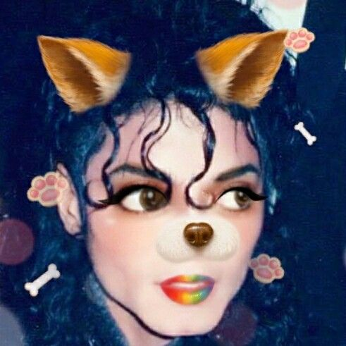

BRASIL GANHOU A COPA!!!! UUHUUULLL!!!!
Por: Malu Costa e Emily Pinto
Meus amores, o Brasil ganhou a copa de 6x1 pra Alemanhaa. VIVA O MAIOR DO SUL DO MUNDOO!!!
Somos as mais incríveis do mundo aceitem hehe
Por: Malu Costa e Emily Pinto
Meus amores, o Brasil ganhou a copa de 6x1 pra Alemanhaa. VIVA O MAIOR DO SUL DO MUNDOO!!!

Por: Malu Costa e Emily Pinto
Gente o Michael Jackson foi encontrado vivo nessa manhã de sexta feira!! Lá em Maceió. Ele foi encontrado na praia comendo um milhozinho com manteiga.